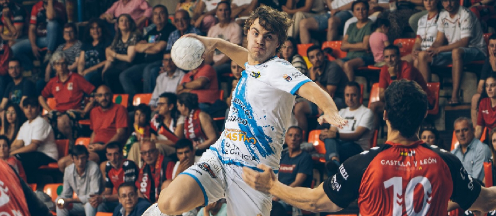
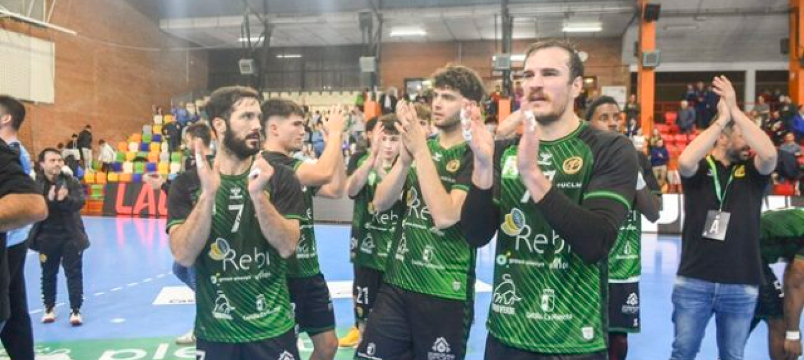
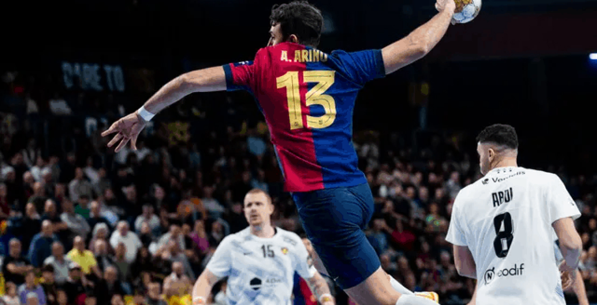

La Liga Asobal registra una asistencia media
de casi 20.500 espectadores en 2023-2024.

Horario y dónde ver por TV hoy el BM Logroño
La Rioja - Barça de la Liga ASOBAL.

El REBI Cuenca lleva los mismos puntos que el
año pasado al final de la primera vuelta.

Logroño La Rioja-Barça: en el puente, un
clásico de Asobal.